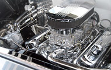
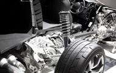

Escaneo Servicios
Lectura y borrado de códigos, diagnóstico de todos los módulos electrónicos del coche como ABS, airbag, TPMS y TPS, así como la revisión de luces encendidas en el tablero, como la luz del motor.
Leer más
Mantenimiento preventivo
Su principal objetivo es prolongar la vida útil del automóvil, garantizar su rendimiento óptimo y minimizar el riesgo de averías, lo que también contribuye a mejorar la seguridad y confiabilidad del vehículo.
Leer másReparación Servicios

Suspensión Servicios
Los servicios de suspensión son cruciales para mantener la calidad de conducción y la seguridad del vehículo. Si notas un manejo inestable o ruidos inusuales, es recomendable traer el auto con un profesional.
Leer más